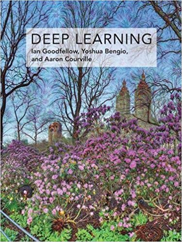
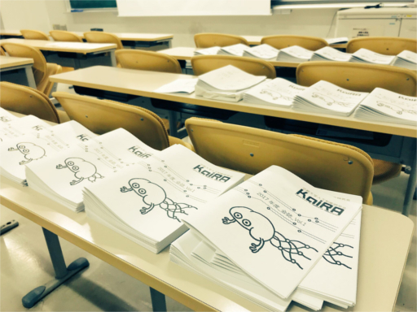
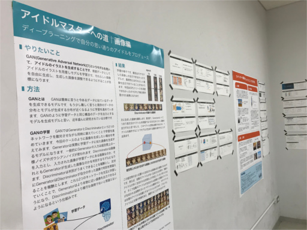
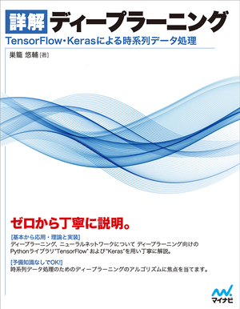

| 23-24 Nov. 2019 |
京都大学の11月祭に出展しました。 |
| 17 May. 2018 |
新入生歓迎会を開催しました。 |
| 1 Feb. 2018 |
種石先生がNVIDIA社のDLI University Ambassadorに選ばれました。 |
| 8 Dec. 2017 |
「DeepLearning（日本語版）」の輪読を開始しました。  |
| 30 Nov. 2017 |
「詳解ディープラーニング」を読破しました。 |
| 23-26 Nov. 2017 |
京都大学の11月祭に出展しました。   |
| 6 Jul. 2017 |
「詳解ディープラーニング」の輪読を開始しました。  |
| 29 Jun. 2017 |
「ゼロから作るDeepLearning」を読破しました。 |
| 20 Apr. 2017 |
「ゼロから作るDeepLearning」の輪読を開始しました。 
|
| 10 Apr. 2017 |
新歓説明会を実施しました。 宣伝の甲斐があってか、この週でメンバーが30名を突破しました。 |
| 4 Apr. 2017 |
新入生を相手に、初めてビラまきをしました。 同時にツイッターでKaiRAの宣伝に努めました。 |
| 16 Mar. 2017 |
KaiRAを設立しました。 学生メンバーが1人しか居なかったので、ビラ作成などにとりかかりました。 |